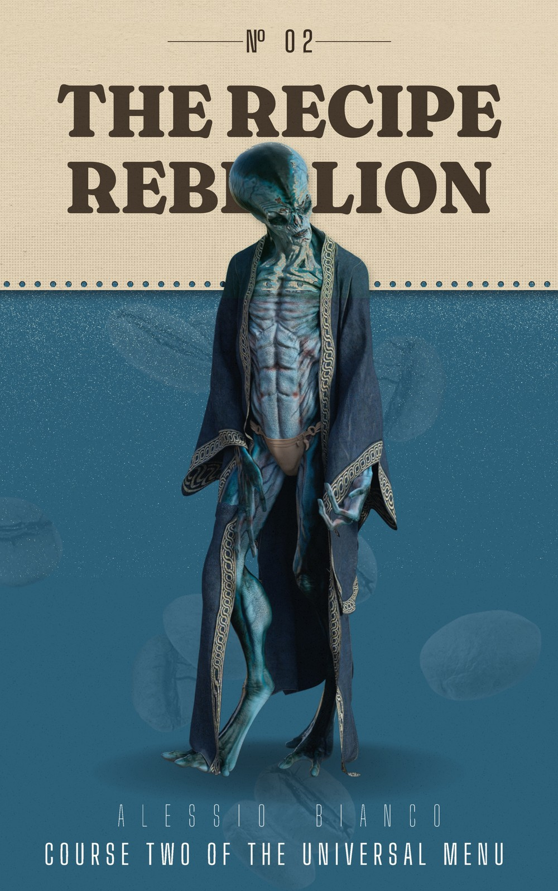

The Aperitif
Os extraterrestres aterraram num restaurante à beira da falência e nomearam o cozinheiro da noite embaixador da humanidade. A civilização deles é perfeita. Tem uma omissão.
Apostou a Terra numa rebelião com nove séculos — sem perguntar contra o que, ao certo, se rebelam os rebeldes.

Catorze meses após a aterragem, a Terra está em pleno florescimento: as curas resultam, a esperança de vida sobe, as lotarias de voluntários esgotam — e Max Reznik, o homem que disse a verdade à sua espécie, é um meme gasto. A Hospitalidade achou o aviso encantador: a paixão de um Mestre pelo seu ingrediente honra a mesa. Por isso, quando as audiências de admissão da Terra se reúnem no Concourse, sede da Guilda dos Críticos, Max vai — e encontra, nos corredores de serviço da política alienígena, uma rebelião com nove séculos contra os comedores de mundos. Aposta nela a Terra — sem exército, sem trunfos, sem credibilidade: apenas uma banca, uma faca e uma contenda que ele pode alargar. O prato do meio do Menu Universal é a sátira de Bianco no seu ponto mais afiado: um livro sobre saber ler a sala, numa sala onde se é o menu.
Livro 2 de The Universal Menu
Eles nunca mentiram. Nós é que nunca lemos o menu.
The Universal Menu
Os extraterrestres aterraram num restaurante à beira da falência e nomearam o cozinheiro da noite embaixador da humanidade. A civilização deles é perfeita. Tem uma omissão.
Apostou a Terra numa rebelião com nove séculos — sem perguntar contra o que, ao certo, se rebelam os rebeldes.

Se não conseguir impressionar o crítico, faça-o devolver o prato.
Abre o livro — o mundo está lá dentro.
Ver a estante · 43